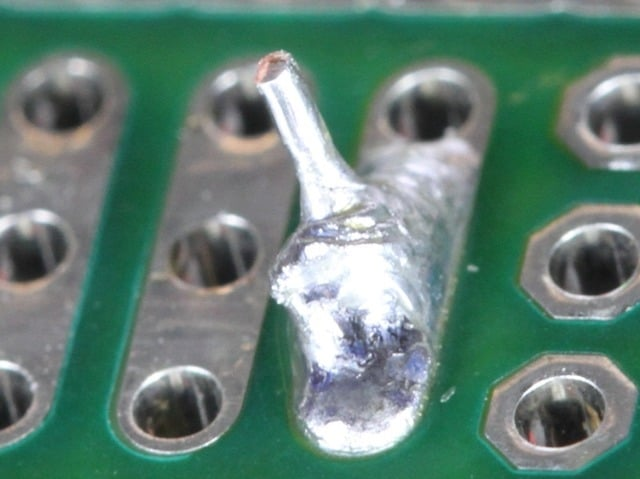
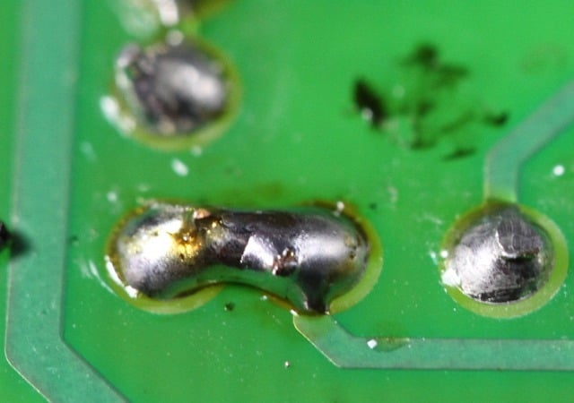
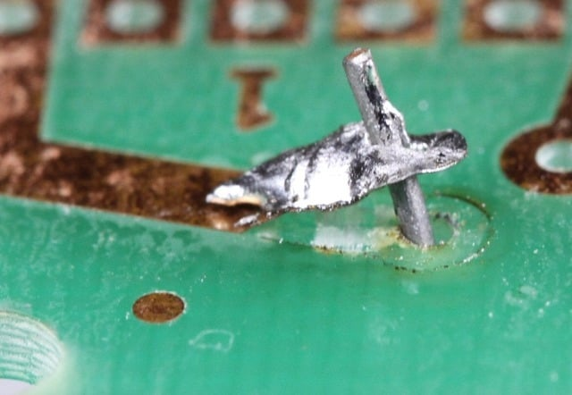
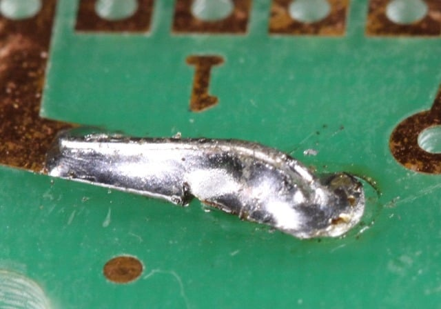
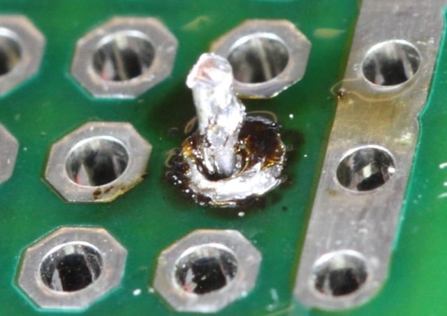
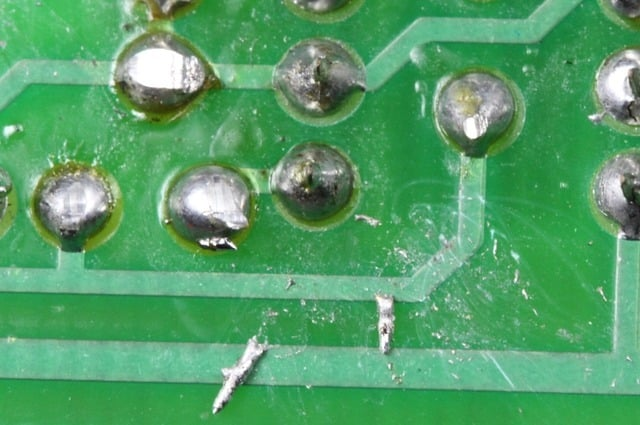

Troubleshooting
Something's wrong. Work through this page systematically — the fix is almost always simpler than you think.
The Universal Checklist
Before diving into specifics, check these every time:
- Is there flux? Add flux. 90% of soldering problems are flux problems.
- Is the tip clean and tinned? Wipe on brass wool, re-tin.
- Is the temperature right? Lead-free needs 350-400°C. Check your station.
- Is the tip big enough? Bigger tip = more heat delivered.
Solder Won't Melt or Flow
| Symptom | Likely Cause | Fix |
|---|---|---|
| Solder wire won't melt on the tip | Iron not at temperature, or way too low | Wait for warmup. Verify station reads 350°C+. Check the tip is seated properly. |
| Solder melts on tip but won't flow to joint | Pad/lead not hot enough | Iron is only heating one surface. Reposition to touch both pad and lead. |
| Joint takes >5 seconds and still won't flow | Ground plane heat sink | Bigger tip + higher temp (380-400°C). Or preheat the board. |
| Solder melts but immediately solidifies | Tip temp too low for lead-free | You might be at 280°C (fine for leaded, too low for lead-free). Set to 360°C. |
| Solder flows on the tip but not on the pad | Oxidized tip | Tip can't transfer heat properly. Clean on brass wool, flux the tip, re-tin. |
When a joint won't flow, apply fixes in this order: (1) add flux, (2) clean/re-tin tip, (3) bigger tip, (4) higher temperature, (5) preheat the board. Do not just hold the iron longer — after 5 seconds you're burning flux and damaging components.
Solder Balls Up / Won't Wet the Pad
| Symptom | Likely Cause | Fix |
|---|---|---|
| Solder beads up on the pad like water on wax | No flux, or flux burned off | Add external flux (pen or syringe). Reflow. |
| Solder wets the lead but not the pad | Pad oxidized or contaminated | Clean with IPA. If heavily oxidized, very lightly abrade with fiberglass pen. Re-flux. |
| Solder wets the pad but not the lead | Lead oxidized, coated, or wrong material | Some leads have coatings (gold flash over nickel). Flux heavily. If it's stainless or aluminum — you need special flux. |
| Pad looks shiny but solder won't stick | ENIG finish with contamination | Clean with IPA. Apply aggressive flux (RA). The nickel layer under the gold can oxidize through porous gold. |
| Solder flows then pulls back (dewetting) | Contamination under the surface, or intermetallic problem | Clean thoroughly. If HASL finish, the underlying copper may have dissolved too much tin. May need to re-tin the pad. |
Cold / Dull / Grainy Joints
| Symptom | Likely Cause | Fix |
|---|---|---|
| Dull, rough, crystalline surface | Insufficient heat — joint never fully reflowed | Add flux, reheat until solder flows freely. Hold still during solidification. |
| Joint looks okay but has micro-cracks | Movement during solidification | Hold everything still for 2-3 seconds after removing iron. Vibration from a fan or bumping the desk counts. |
| Grainy, matte finish (lead-free) | This is normal | Lead-free solder is naturally matte/satin. Only rework if the joint is convex or balled up. |
| Frosty/white residue around joint | Flux residue (cosmetic) | Clean with IPA if it bothers you. No-clean residue is electrically inert. |
Photo: Cold joints vs good joints

Solder Bridges
Between Through-Hole Pins
| Cause | Fix |
|---|---|
| Too much solder | Flux + solder wick. Press wick onto bridge, heat through wick, excess solder absorbs. |
| Pads too close (design issue) | Wick off excess. Use less solder on these joints. Consider finer solder wire (0.5mm). |
Between Fine-Pitch IC Pins
| Cause | Fix |
|---|---|
| Too much solder during drag soldering | Add flux across the bridged pins. Drag a clean, tinned tip through the bridge. Surface tension separates them. |
| Not enough flux | Flux is what makes drag soldering work. Apply generously and drag again. |
| Solder wick won't reach between pins | Use the thinnest wick available (1mm or less). Or cut a strip narrower with scissors. |
Photo: Solder bridge between pins

Tombstoning
SMD passive stands up vertically on one end. Surface tension on the reflowed pad pulls the component upright.
| Cause | Fix |
|---|---|
| One pad reflows before the other | Preheat the board so both pads reach reflow temp simultaneously. See Preheat. |
| Unequal solder paste deposits | Check stencil alignment. Both apertures must be identical. |
| Component placed off-center | Center precisely. With even paste, surface tension will self-correct during reflow. |
| Hot air nozzle aimed at one end | Center the nozzle over the component. Heat both ends equally. |
Lifted Pads
The copper pad separates from the FR4 substrate. This is bad — and often irreversible.
| Cause | How to Avoid |
|---|---|
| Too much heat for too long | Copper-to-FR4 adhesive weakens with prolonged heat above Tg. Reduce dwell time. Preheat instead of cranking temp. |
| Mechanical force during desoldering | Let the joint fully melt before pulling on anything. Never twist or pry. |
| Repeated rework cycles | Each cycle weakens the bond. 3 rework cycles is the practical max on most PCBs. |
| Pulling solder wick off while cold | Always remove wick while iron is still heating it. Cold wick solders itself to the pad. |
Repairing a Lifted Pad
- If the trace is still intact (pad tore but trace didn't break): solder directly to the trace stub. Ugly but functional.
- If the trace broke: bodge wire from the nearest via or component pin that shares the same net.
- Epoxy the lifted pad back down (cyanoacrylate or UV-cure), then solder to it. Mechanically fragile but works for prototypes.
Photo: Lifted pad

Photo: Lifted pad repair

Overheated Joints / Components
| Symptom | What Happened | Fix |
|---|---|---|
| Brown/black discoloration on the board around the joint | FR4 scorched. Cosmetic damage at mild levels. | Lower temp, shorter dwell next time. Preheat instead. |
| Component doesn't work after soldering | Exceeded max junction temperature. Semiconductor damaged. | Use thermal shunts (clip a heatsink between iron and component). Especially for LEDs, MOSFETs, and voltage regulators. |
| Melted plastic on connector or header | Plastic parts melt at 200-260°C | Work fast (2-3 seconds). Use thermal shunts. Or solder one pin, let it cool, then do the next. |
| Solder joint looks burned — dark, matte, crusty | Flux completely charred | Clean off the residue, apply fresh flux, reflow. If it still looks bad, wick off and redo. |
Photo: Overheated joints

Solder Spatters / Spit
| Cause | Fix |
|---|---|
| Moisture in the flux or on the board | Preheat to drive off moisture. Store solder wire sealed. If your workspace is humid, this gets worse. |
| Flux boiling explosively (too much, too hot) | Use less flux, or lower temp slightly. Or preheat to let flux outgas before iron contact. |
| Wet sponge water flicking off the tip | Switch to brass wool for tip cleaning. No water = no spatters. |
Photo: Solder spatters on a board

Systematic Approach
When you have a board full of bad joints, don't rework randomly. Diagnose the pattern:
| Pattern | Root Cause | System Fix |
|---|---|---|
| Every joint is cold/dull | Temperature too low | Turn up the iron. You're probably 50°C too low. |
| Random cold joints, others fine | Inconsistent technique (iron angle, dwell time) | Focus on consistent iron contact with both pad and lead. |
| Joints near board edges OK, center joints cold | Board center has more thermal mass (ground planes) | Preheat the board. Or increase temp when working the center. |
| All SMD joints have bridges | Too much solder paste or residual solder | Reduce paste volume. Clean pads between rework cycles. |
| Components shift during hot air | Too much airflow or uneven heating | Reduce airflow. Use a nozzle matched to component size. |
Add flux. Joint won't flow? Add flux. Bridge? Add flux and drag a clean tip through. Cold joint? Reheat with flux. When in doubt, flux. You are almost certainly not using enough.
Measurement Pitfalls
This is a common mistake. Infrared thermometers have a distance-to-spot ratio (D:S) — typically 8:1 or 12:1. At 8:1, the measurement spot is 1 inch at 8 inches away. A standard chisel tip is ~2.4 mm (~0.1 inch) — so the thermometer would need to be less than 1 inch away to read just the tip, which is inside most IR guns' minimum distance.
Even at the right distance, the readings are wrong:
- Shiny or chrome-plated tip surfaces reflect IR rather than emitting it — reads far too low
- An oxidized tip reads differently than a clean one — the emissivity changes
- The curved tip surface scatters IR in all directions
Use a contact thermocouple (like a Hakko FG-100B or any Type-K thermocouple thermometer with a tip sensor). This is what IPC J-STD-001 requires for tip temperature verification. IR thermometers are fine for board surface temperature — just not for soldering tips.